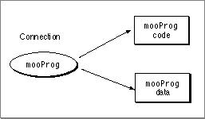
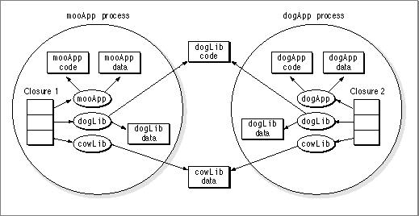

Code and Data Sections
Each connection has sections associated with it that contain either code or data as shown in Figure 1-3.Figure 1-3 Sections associated with a connection

Within a process, a connection is generally shared between multiple closures, and therefore both code and data sections are shared. Fragments that are used in multiple processes share their code, but they have the following choices for sharing their data:
In Figure 1-4, fragment
- Systemwide (or global) instantiation. The Code Fragment Manager allocates a single copy of the library's global data, and all connections for a particular fragment share that data.
- Per-process instantiation. The Code Fragment Manager allocates one copy of the library's global data for each process. Each connection can access only its own copy of the data.
cowLibis globally shared while fragmentdogLibis shared per-process.Figure 1-4 Fragments shared between processes

In most cases, per-process sharing is preferred over systemwide sharing. For more information about systemwide sharing, see "Systemwide Sharing and Data-Only Fragments," beginning on page 3-24.
Each library determines how its global data is to be shared, and this information is stored in the library at link time. The library developer can indicate either systemwide or per-process data instantiation for each separate data section in a library.